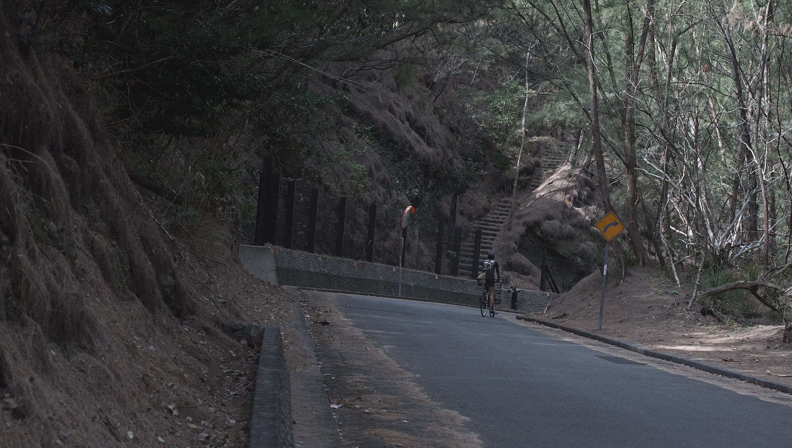

Ogasawara cruising guide
- Introduction
- Sending the paperwork
- Arriving in chichijima
- Paperwork
- Leaving chichijima
- Tides
- Map
- About the town
- Diesel
- Water
- Showers
- Toilets
- Trash and recycling
- Groceries
- Internet
- Money
- Yacht club
- Hardware stores
- Medicine
- Laundry
- Walking trails
- Wildlife
- Native products
- Restaurants
Introduction

While researching information on Chichijima, we realized there wasn't very much information available, and so we've decided to make a guide for those who wish to sail there. Pino arrived there on February 16th 2019, and stayed for two weeks. Here is what we learned.
Sending the paperwork
If you plan to make Chichijima your first port, you will have to apply for a Closed port permit because Ogasawara isn't an open port.
You should send the following information, a week before arriving, to this address itou-h55gs@mlit.go.jp. I would recommend sending it before you leave your last port.
- Crew list
- Passport scans
- Boat papers (certificate of registry)
And to the Ogasawara Coastguard, at jcg3ogasawara-9q3p@mlit.go.jp, you need to send the above files (minus the closed-port permit), along with:
You should also send the papers before leaving your last port. You'll need to send them a 24h arrival notice too, but this need only be an email with your ETA. If information changes, you need to tell them about it, send as many emails as necessary. The Japanese Coastguard is very communicative, and they want to know where you are. They will likely ask you for your SAT phone number, upon sending your first message include your SAT phone address too.

Arriving in chichijima
The port of Chichijima is very easy to navigate through, even at night, all is well-marked and well-lit. To check-in, you need to head deep into Futami Port. As you enter, you will likely see a ferry docked on your port side, and continue past the breakwater to your starboard side. The dock will be on your port side. As of February 2019, they are building an extension to the dock that provides a bit more shelter in SW winds. This dock isn't charted, so if you arrive at night be careful. The end of the dock is lit.
The dock is quite high, and there is only one ladder. It is likely you'll be the only boat there, so aim for the ladder when docking. The pier has big rubber bits to protect your boat (although they do stain), even the ladder is made of thick rubber and won't damage your yacht. You'll need to wrap your lines around big yellow bollards. You won't have to worry about your lines chafing on the dock because they've added a rounded rubber edge to it — Japanese are so thoughtful in that way.
- Position at dock: 27 5.921'N 142 12.013'E
When you arrive, stay on the boat and don't go on land. It is likely that the JCG will be there waiting for you, with the officials lined up to check you in. If you arrive very late, the JCG will be there anyway to give you instructions (as was the case for us, since we arrived at 9pm). They will give you a time for check in on the next day. Weekend check-ins are no problem, we did it on a Saturday.

Paperwork
You'll be visited by quarantine, immigration and customs. There was about 5-6 people on the dock, taking turns aboard our boat.
Quarantine will ask if you have any plants, meat or other fresh items on board. They may or may not confiscate them, I had none aboard when they came and so they took nothing. I had many dried legumes, grains aboard in jars that they saw, but they didn't care to take them. You can see a list of prohibited items here.
Customs Officials will ask you about your last and future ports, they will ask for precise dates. Because making a long list of planned ports is no longer necessary, you only need to give them a general list.
They will give you a Closed port permit, that will give you blanket permission to visit all “closed ports” (which basically means everywhere in Japan that is not an open port, including anchorages) for as long as you are in Japan.
You will also get a Naiko Senpaku (domestic boat) registration that will waive the requirement for you to to port entry/exit Customs paperwork in open and closed ports (although you are still required to do port entry/exit Coast Guard paperwork for open ports, but actual requirements vary by port).
Immigration will ask you to step off the boat and likely take you into an office to do the paperwork. You will fill a card like they have on planes, and they will take a photo of you as well as a scan of your index fingers, again, this is the same sort of machine they have at airports. They'll ask you to fill many papers, all of these have english writing. Most travelers are allowed 3 months on a tourist visa, although your boat can stay in Japan indefinitely.
They will ask you if you need to take on gas and water, and how much. They will likely come to your boat later on and set up a time and date to help you do this. You cannot do this by yourself.
Leaving chichijima
The officials will come around often to make sure your departure dates haven't changed. Know that you can change your mind, especially if the delay is weather related, they will understand but they will want a precise date from you. This isn't because they want you to leave, but because they need and want to know, there are papers to fill before leaving (even if you're not checking out of Japan).
You'll be filling out papers with your departure date and time, as well as your intended destination port. You may or may not get a visit by immigration and customs at your next port (each port has its own rules). You need to send a 24h arrival notice (with your ETA, boat info etc) to the JCG of the region, for every new prefecture you are visiting.
Tides
The tides here aren't huge, but can be significant in the spring. We've seen drops and highs of 3.5 feet, but generally it tends to rise to a bit less than 3 feet. This isn't too much, but given the fact that the wall you need to moor onto is high already, a small drop will make a big difference.
Map
A map of the island will likely be given to you on arrival, otherwise you can get it at the visitor center. They may, or may not have an english version available. The map shows where all the shops and restaurants are, it also marks all of the trails on the island.

About the town
The town is not very big, but there are many parts to it. You'll probably spend all of your time in Omura, although the part of town where the dock is is called Okumura, and between it and Omura is Kiyose. If you walk, or cycle down the main rode to the east of the bay, you'll end up in another small town called Ougiura. Although there is not very much there, aside from walking trails, beaches and some hotels. You can take a bus from Omura to get further inland, if you do you can get to USK coffee, a very special cafe where the owner grows and roasts his own coffee — note that it is very expensive, ~ JPY 1000 per cup. You can also visit the place where the Ogasawara salt is processed, some ways up the road.
There are many remnants of the war here, many structures left behind that you can visit. You may need to hire a guide if you want to see the more prominent ones.

Diesel
The gas stations don't carry diesel, and so you must fill at the fishermen's pier on the other side of the harbour. In the above picture, it is the area right of it, near the building labelled "JF". The officials will take you with them to do this. We carried our empty jugs to fill them. If you need a lot of diesel, it may be possible to dock there to fill up, but you'll still need their assistance.
Water
An official will come to your boat to set up a time for water, the Ogasawara Yacht club has a key to a water faucet that stands just 10 meters away from the dock. They will unlock a little trap door, and hook up a hose to it. You can then carry water jugs back and forth to fill up (it's really not far), or you can move your yacht back a few meters to do it.
There is a flat fee of JPY 1000 to fill up, we only filled 100L, but if you require much more they may charge extra for it. Water on the island is scarce in the winter and early spring, as they rely on rain, so don't waste it. The island has a RO plant, but the islanders consume a lot more than the plant can provide. Rain on the island is the main way to get water.
Showers
At the time of the year we were there (february), the showers were closed. It is because it's the driest time of the year, and that water on the island is scarce since they rely heavily on rainwater. There are many signs scattered about the town asking to be careful with water consumption, be mindful of this when using their facilities.
The nearest shower is near the beach at Omura, it's an open shower that is used by swimmers to rinse themselves off. It is open in the warmer season, and when there is heavier seasonal rain.
Toilets
There are public bathrooms everywhere in the city, there are two of them right near the pier and many more around town.
Trash and recycling
Trash and recycling correctly is very important in Japan. Being an island, and a place where lots of packaging is used they put much care into recycling and burning items, pilling it up is not an option. All refuse and recyclable products are washed, and separated. As a visitor, you should try to inform yourself as much as you can.
B.I.T.C has some bins near the vending machines for certain types of recyclables, like PET bottles (plastic bottles, without the cap) and drink cans (aluminum). There is also a bin with the word burnable garbage (燃えるゴミ) on it, you can use this to throw away food scraps and products marked with プラ (plastic is lumped in with the burnables, but separated at a nearby facility). The word for garbage is "gomi".
Throwing away recyclabes like carboard ("danboru" 段ぼる) and paper is a bit more complicated, as there are no bins to dispose of them in town. We were told that near the pier, if you turn right and follow the water, you'll see a building on the corner with a playground named the Region welfare center or Chiikifukushi sentaa (地域福祉) in Japanese. There is no bin to dipose of items directly, but you might be able to place your recyclables with theirs on collection days.
Groceries
There are two main stores in Omura (the main town), and both are sitting right in front of each other. These stores, like many others, close before and after Ogasawara Maru (the ferry) comes and leaves. There is:
- B.I.T.C
Sells onigiri, milk, some imported products, fresh produce, beer, some hardware store products (paint, tape), toiletries and stationary.
- スーパー小祝 (supermarket)
Sells bigger quantities of certain items, has a better selection of fresh produce, beer, milk and snacks.
Note that the prices for food here is more expensive than on the mainland.
Internet
There are many options for internet on the island.
- HeartRock cafe
Located on the main road, easy to recognize because of all the wooden statues in the front. This cafe offers wifi, you can check your messages while having a drink or some food. The fare here isn't cheap though, I recommend this for light use only.
- Ogasawara visitor center 小笠原ビジターセンター
The Ogasawara visitor center, on the sea-side of the road and located behind the korean restaurant (orange building) on the main street offers free, and fast wifi. You can sign up to "free hotspot" and get internet for 180 days (cool huh?). The connection is fast, and the best thing is that you can go sit in the back in the 'study section' and use the power outlets (ok for american-style devices). It opens at 9h and closes at 17h, its schedule is tightly linked to the comings and goings of the Ogasawara Maru ferry. Although in the high season, it is always open.
- Ogasawara information center 小笠原村情報 (ogasawara-mura jouhou sentaa)
This place is harder to get to, it's a good uphill walk (~45min) from the pier as it is situated at the very end of town. It is secluded, and not easy to find. They offer laptops for your personal use, but you can bring your own. Know that they don't offer wifi, only LAN. There is power, and they charge JPY 300 per hour. They're open from 9h to 17h.
Money
There are ATMs on the island to take out money, you have a few options:
- Post office (郵便局 yuubinkyoku)
The post office is easy to find, it's a building with a large red T as a logo. You can use the machine inside to take out money with a credit card. It's located on a side street, if you walk on the main road, look for the B-しつぶ building (the one with a whale painted on it) and take a right. The post office is on the left side of the road. The ATM has an english menu option.
- Near the ferry terminal
There is an ATM (green booth) near the ferry terminal, easy to spot. There are also others around town, all marked by a big ATM sign.

Yacht club
When you arrive, you'll get many visits by curious locals, or by the local yachties of the Ogasawara Yacht Club. They have a guestbook that they will have you sign, containing all of the visits of foreign boats to the island. The yacht club has no building, and the members are few. The yachting scene used to be bigger here, some years ago there was as many as 10 boats moored in Chichijima, now there are only two. The owner of Okera III (second boat, pictured above) is a very kind and amiable sailor, I hope you get to meet him.
There are races that take place between Chichijima and mainland that start here, if you happen to be here in May, you'll meet many more Japanese sailors as the harbour will have many visiting boats.
Hardware stores
There are no hardware stores perse on the island, you'll find some goods at B.I.T.C (silicone, paint, gloves, tools etc), otherwise the people at the gas station at the end of town may have a few engine items. There is also a store in town for outboards, located in a side street in Omura. An easy way to find it, is to walk to the building with "Maruhi" written on it (a souvenir shop) and to walk up the street facing it, the store will stand on your left.
It may be possible to order items online, and to have them sent at an address in town. The item will arrive when the Ogasawara Maru ferry is in town.
Medicine
The only place I could see that had medicine was a small souvenir shop (which also has toiletries and medicine). It's a brown building that it across the street from the Supermarket. It has a sign near it with the japanese word くすり which means "medicine".

Laundry
To my knowledge, there is none. If you make friends, it's a good idea to ask them. Otherwise, if an Ogasawara Yacht club member visits, ask them about using the washing machine at Flora (a store). The word for laundry is 洗濯 (sentaku), and the one for washing machine is 洗濯機 (sentakuki). They'll also understand if you ask for コインランドリー (koin randorii) coin laundry.
Walking trails
There are many walking trails on the island, if you have the island map you'll be able to see them all. They are clearly marked, and very easy to find. Many are within walking distance, walking on the roads is really no problem at all. If you have a bicycle, this place is good for that, although there are many hills.
The first trail you should check out is very close to the pier, it leads up to a look-out point. From it, you'll see your yacht at the dock as well as the entire bay. The view is absolutely gorgeous! There is also a really cute shrine on this path that you should check out.

Wildlife
The wildlife in Chichijima is very diverse, there are many plants and fauna endemic to the island. If you walk around the island you'll likely encounter some wild goats, petrels, woodpidgeons, fruit bats (rare) and many geckos and lizards.
Native products
Some stores sometimes sell Ogasawara bananas and papayas (although they're very expensive). You can also find many derived products at the souvenir stores like Ogasawara salt, passion fruit jams and cookies as well as lime jams and juices.
Restaurants
There are many restaurants on the island, most of them are in Omura. Some are on the main street, and a few are on the street parallel to it. Many restaurants, like izakayas (japanese pub with light fare), open after 17h30. Izakayas serve drinks, and have extensive food menus made up of dishes to share. Some will have english menus, but not all. Sometimes there is a button on the table that you can use to call a server to take your order.
If you want to ask for the bill, a good way to ask is to make eye contact with a waiter, and to cross your fingers (from different hands) together to form an X. This means, "I am ready to pay", with this gesture, if the waiter is within ear range you can say
- お会計おねがいします!
- Okaikei onegaishimasu!
- The bill please!
"O kaikei" means bill.